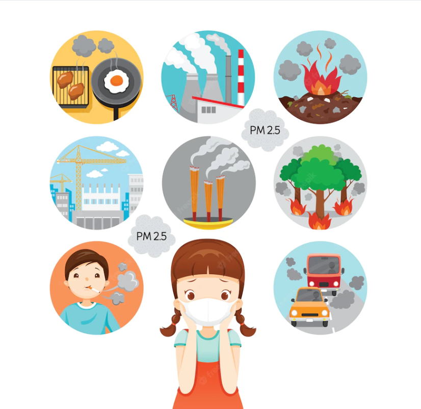
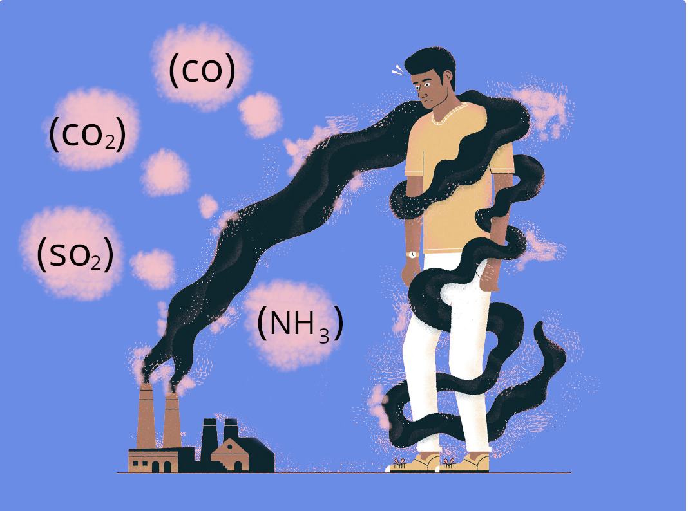

Onde ocorre
Existem duas maneiras de causar a poluição do ar, através de fontes naturais
ou de atividades humanas, que causam os maiores danos à atmosfera.
FONTES NATURAIS:
Alguns fenômenos naturais acabam liberando gases poluente, como, por exemplo:
-Queimadas, queima de combustíveis fósseis.
-Gases emitidos em erupções vulcânicas e na decomposição de matérias orgânicas.
As emissões de poluentes causadas por fontes naturais constituem uma parte consideravelmente muito
pequena do processo de poluição atmosférica. Ao mesmo tempo, a maior parte dos poluentes produzidos
e
liberados pelas atividades humanas estão nesse processo.
AÇÃO HUMANA
Os processos naturais do planeta Terra são sim danosos para o próprio planeta, porém,
são as atividades
humanas que mais representam riscos para o meio ambiente.
-Processos industriais.
-Resíduos Industriais, principalmente as grandes fábricas que utilizam muita energia;


As fontes naturais e atividades humanas liberam alguns poluentes que são emitidos no ar prejudicando a
atmosfera.
Podemos citar alguns deles que causam os maiores impactos tanto para a natureza quanto a vida humana:
Monóxido de carbono (CO)
É um gás incolor, sem cheiro e tóxico. Produzido principalmente pela combustão incompleta de
combustível. Ela interfere no transporte de oxigênio em nosso corpo, o que pode levar à asfixia.
Dióxido de Carbono (CO2)
É uma substância fundamental para os seres vivos. Esse gás é produzido durante a respiração celular, mas
possui outras fontes responsáveis pela maior parte da poluição do ar, como os processos de
decomposição e a queima de combustíveis fósseis. Este gás é atualmente uma das causas do conhecido
efeito estufa. Isso ocorre porque o dióxido de carbono absorve parte da radiação emitida pela superfície
da Terra, retendo o calor e fazendo com que a temperatura suba.
Óxidos de Enxofre (SO2)
O mais nocivo é o dióxido de enxofre (SO2), que é produzido em vários processos industriais e na
atividade vulcânica. Na atmosfera, o dióxido de enxofre forma ácido sulfuroso, que causa chuva ácida.
Amônia (NH3)
É um gás incolor, ocorre naturalmente no meio ambiente e em organismos vivos, mas também pode ser
produzido artificialmente e usado como ingrediente em fertilizantes e produtos de limpeza.
Uma vez no ambiente, essa substância pode gerar problemas ambientais, como a morte de peixes e
eutrofização, além de problemas de saúde em seres humanos, como irritação na pele, olhos e garganta.
.png)